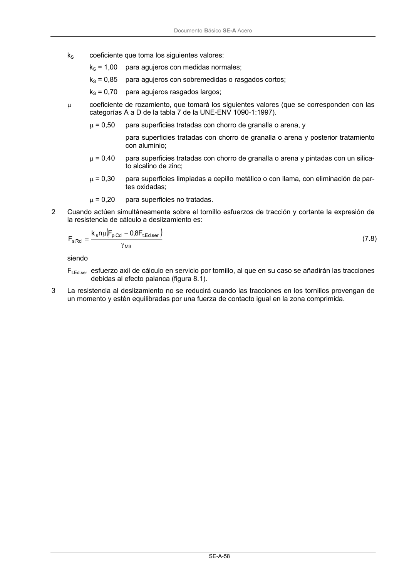

DB-SE-A Acero · edición 2007-10-23 · capa oficial
Documento DB-SE-A-oficial · SHA-256 del PDF 9ed9ea694aabfbda3bfbbef40dfe9223fde05d13c35bc2ba9751e5a96a22a64f
Copia fiel del PDF fuente · Fuente oficial
Ficha de la disposición en la fuente oficial
Formatos: JSON del segmento · Markdown
7.3.2 Resistencia de cálculo a deslizamiento 1 La resistencia de cálculo a deslizamiento de un tornillo pretensado, se tomará como: Cd . p 3 M s Rd .s F n k F γ µ = (7.7) siendo γM3 = 1,1 (en uniones híbridas constituidas por tornillos de alta resistencia y soldadura trabajando conjuntamente se adoptará el valor 1,25); Fp.Cd fuerza de pretensado del tornillo (véase apartado 7.3.1); n número de superficies de rozamiento; DocumentoBásico SE-A Acero SE-A-58 kS coeficiente que toma los siguientes valores: kS = 1,00 para agujeros con medidas normales; kS = 0,85 para agujeros con sobremedidas o rasgados cortos; kS = 0,70 para agujeros rasgados largos; µ coeficiente de rozamiento, que tomará los siguientes valores (que se corresponden con las categorías A a D de la tabla 7 de la UNE-ENV 1090-1:1997). µ = 0,50 para superficies tratadas con chorro de granalla o arena, y para superficies tratadas con chorro de granalla o arena y posterior tratamiento con aluminio; µ = 0,40 para superficies tratadas con chorro de granalla o arena y pintadas con un silica- to alcalino de zinc; µ = 0,30 para superficies limpiadas a cepillo metálico o con llama, con eliminación de par- tes oxidadas; µ = 0,20 para superficies no tratadas. 2 Cuando actúen simultáneamente sobre el tornillo esfuerzos de tracción y cortante la expresión de la resistencia de cálculo a deslizamiento es: ( ) 3 M ser . Ed .t Cd . p s Rd .s F 8,0 F n k F γ − µ = (7.8) siendo Ft.Ed.ser esfuerzo axil de cálculo en servicio por tornillo, al que en su caso se añadirán las tracciones debidas al efecto palanca (figura 8.1). 3 La resistencia al deslizamiento no se reducirá cuando las tracciones en los tornillos provengan de un momento y estén equilibradas por una fuerza de contacto igual en la zona comprimida. DocumentoBásico SE-A Acero SE-A-59
